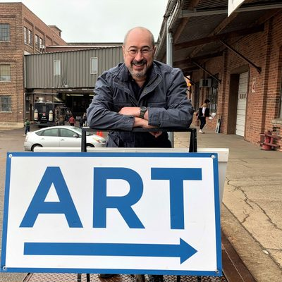
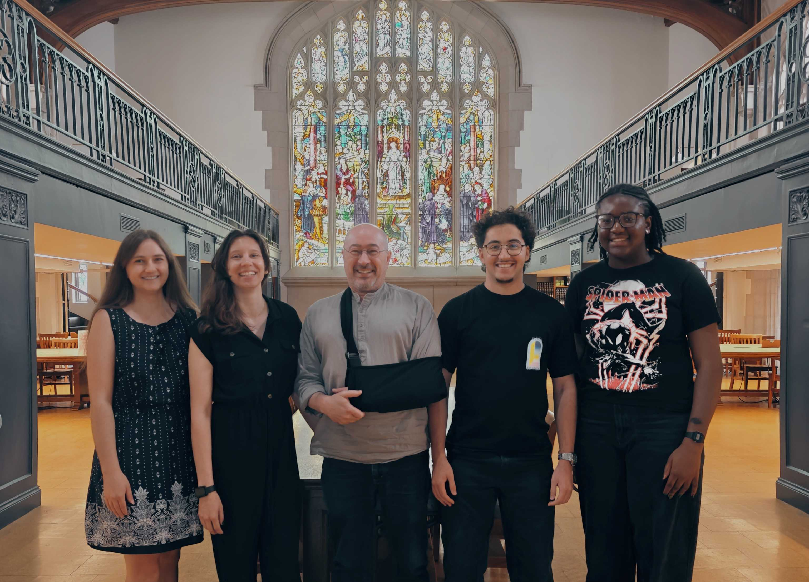

Quire Maker was built at ILiADS 2026 at Vassar College, reviving an idea that has helped students understand how books are made.

Project Lead
Pierre
Originator of the project and its guiding voice
Built at ILiADS 2026 by our team:
